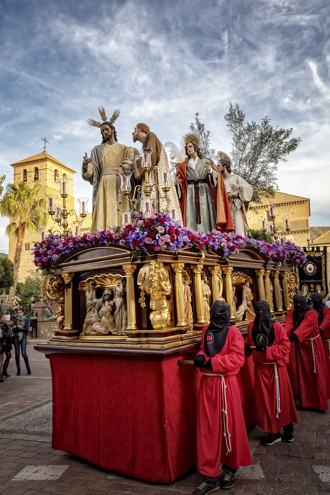

JUEVES SANTO
Procesión del Prendimiento y Entrega de Jesús. Hermandad de Nuestro Padre Jesús de la Misericordia en el beso de Judas, Santísimo Cristo de la Entrega, Nuestra Señora de los Dolores, San Juan Evangelista y María Santísima de la Caridad en su Soledad.
SANTÍSIMO CRISTO DE LA ENTREGA: Año 2006. Representa el momento en el cual Cristo en la Cruz hace su entrega al Padre.
NUESTRO PADRE JESÚS DE LA MISERICORDIA: Talla de cuerpo entero realizada en madera, de las denominadas de vestir, con una altura de 1, 80 m. Túnica de terciopelo granate, mantolín azul marino y camisón blanco. Año 1998.
SAN JUAN EVANGELISTA: Con túnica capa y fajín, año 2012.
JUDAS ISCARIOTE Y CENTURIÓN ROMANO: Judas vestido con túnica fajín y mantolín y el Centurión con armadura, casco, lanza, espada y muñequeras realizadas por D. Manuel de los Ríos. Año 2002.
SAN PEDRO Y SAYÓN: San Pedro se realiza en 2018. Imagen de vestir de 1.80 cm. realizada en madera de cedro. Ropa hecha en Alcalá de Guadaira por Gabriel Martín Gázquez. El Sayón con su torcida expresión furibunda pone de manifiesto su agresividad. Año 2012.
MARÍA SANTÍSIMA DE LA CARIDAD EN SU SOLEDAD.
Imágenes realizadas por D. LUIS GONZÁLEZ REY.
SALIDA PROCESIONAL: 19:00 h.
ITINERARIO:
Glorieta de España, Avda. Andalucía, c/. Dr. Artés, c/. Rafael Ortega, c/. Terrera, Avda. San Sebastián, c/. Dr. Gómez Campana, Plaza Jaime Calatrava, Avda. Andalucía, plaza del Pueblo, Avda. Virgen de las Angustias. c/. La Torre, c/. Miguel Solves, Plaza José Bellver, c/. Manuel de Góngora, Glorieta de España.